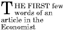

Содержание
В CSS правила совпадения символов определяют, какое правило стиля применить к элементам дерева документа. Такие блоки символов (патэрн), называемые селекторами, могут иметь диапазон имён от простых имён элементов до сложных контекстуальных блоков. Если все условия в патэрн верны для конкретного элемента, селектор совпадает с элементом.
Чувствительность к регистру имён элементов в селекторах зависит от языка документа. Например, в HTML имена элементов нечувствительны к регистру, а в XML - чувствительны к регистру.
В этой таблице суммирован синтаксис селекторов CSS2:
| Патэрн | Смысл | Описан в разделе |
|---|---|---|
| * | Совпадает любой элемент. | Универсальный селектор |
| E | Совпадает любой элемент E (т.е. элемент типа E). | Типы селекторов |
| E F | Совпадает любой элемент F, являющийся потомком элемента E. | Селекторы-потомки |
| E > F | Совпадает любой элемент F, являющийся дочерним относительно элемента E. | Дочерние селекторы |
| E:first-child | Совпадает элемент E, если E является первым дочерним элементом своего родителя. | Псевдокласс :first-child |
| E:link E:visited | Совпадает элемент E, если E является якорем ещё не посещённого ресурса гиперссылки (:link) или уже посещённого (:visited). | Псевдоклассы гиперссылки |
| E:active E:hover E:focus | Совпадает элемент E во время определённых действий пользователя. | Динамические псевдоклассы |
| E:lang(c) | Совпадает элемент типа E, если он на (человеческом) языке с (язык документа специфицирует то, как определяется язык). | Псевдокласс :lang() |
| E + F | Совпадает любой элемент F, непосредственно перед которым идёт элемент E. | Смежные селекторы |
| E[foo] | Совпадает любой элемент E с установленным атрибутом "foo" (с каким-либо значением). | Селекторы атрибутов |
| E[foo="warning"] | Совпадает любой элемент E, чьё значение атрибута "foo" точно равно "warning". | Селекторы атрибутов |
| E[foo~="warning"] | Совпадает любой элемент E, чьё значение атрибута "foo" является списком разделённых пробелами значений, одно из которых точно равно "warning". | Селекторы атрибутов |
| E[lang|="en"] | Совпадает любой элемент E, чей атрибут "lang" содержит список разделённых дефисами значений, начинающийся (слева) с "en". | Селекторы атрибутов |
| DIV.warning | Только в HTML. То же, что DIV[class~="warning"]. | Селекторы классов |
| E#myid | Совпадает любой ID элемента E, эквивалентный "myid". | Селекторы ID |
Простой селектор - селектор типа или универсальный селектор, непосредственно после которого идёт ноль или более селекторов атрибутов, селекторов ID или псевдоклассов в любом порядке. Простой селектор совпадает, если совпадают все его компоненты.
Селектор это цепь из одного или более простых селекторов, разделённых комбинаторами. Комбинаторами являются: пробелы, ">" и "+". Пробелы могут появляться между комбинатором и простыми селекторами вокруг него.
Элементы дерева документов, совпадающие с селектором, называются субъектами селектора. Селектор, состоящий из одного простого селектора, совпадает с любым элементом, удовлетворяющим его условиям. Предопределённость простого селектора и комбинатора в цепи вызывает дополнительные ограничения для совпадения, так что субъекты селектора всегда являются поднабором элементов, совпадающим с самым правым простым селектором.
Один псевдоэлемент может быть присоединён к последнему простому селектору в цепи, и в этом случае информация стиля применяется к подразделу каждого субъекта.
Если несколько селекторов используют общие объявления, то они могут быть сгруппированы в список с разделением запятыми.
Здесь три правила с идентичными объявлениями собраны в одно. Таким образом,
H1 { font-family: sans-serif }
H2 { font-family: sans-serif }
H3 { font-family: sans-serif }
эквивалентно:
H1, H2, H3 { font-family: sans-serif }
CSS предлагает также другие механизмы "сокращений", включая множественные объявления и сокращённые свойства.
Универсальный селектор, записываемый "*", совпадает с именем любого типа элемента. Он совпадает с любым простым элементом в дереве документа.
Универсальный селектор не является единственным компонентом простого селектора, символ "*" может быть опущен. Например:
*[LANG=fr] и [LANG=fr] эквивалентны.
*.warning и .warning
эквивалентны.
*#myid и #myid эквивалентны.
Селектор типа совпадает с именем типа элемента языка документа. Селектор типа совпадает с каждым вхождением типа элемента в дереве документа.
Следующее правило совпадает со всеми элементами H1 в дереве документа:
H1 { font-family: sans-serif }
Авторам может понадобиться, чтобы селекторы
совпадали с элементом, который является
потомком другого элемента в дереве
документа (например, "Совпадать с теми
элементами EM, которые содержаться в
элементе H1"). Селекторы потомков выражают
следующие взаимоотношения в патэрн.
Селектор потомков состоит из двух или более
селекторов, разделённых
пробелами. Селектор
потомков "A B" совпадает, если
элемент B является
произвольным потомком некоторого элемента-предка A.
Рассмотрим следующие правила:
H1 { color: red }
EM { color: red }
Хотя смысл этих правил в том, чтобы выделять текст путём изменения его цвета, в следующем случае эффект не будет достигнут:
<H1>This headline is <EM>very</EM> important</H1>
В этом случае мы дополняем предыдущие правила правилом, которое устанавливает голубой цвет текста, если EM появляется где-либо внутри H1:
H1 { color: red }
EM { color: red }
H1 EM { color: blue }
Третье правило совпадёт с элементом EM в следующем фрагменте:
<H1>This <SPAN class="myclass">headline is <EM>very</EM> important</SPAN></H1>
Следующий селектор:
DIV * P
совпадает с элементом P, который является внуком, или позднейшим потомком, элемента DIV. Обратите внимание на пробелы с каждой стороны от "*".
Селектор в следующем правиле, сочетающий селекторы потомка и атрибута, совпадает с любым элементом, имеющим (1) установленный атрибут "href" и (2) находящимся внутри P, который сам находится внутри DIV:
DIV P *[href]
Селектор дочерних элементов совпадает, если элемент является дочерним относительно другого элемента. Селектор дочерних элементов состоит из двух или более селекторов, разделённых символом ">".
Это правило устанавливает стиль всех элементов P, являющихся дочерними относительно BODY:
BODY > P { line-height: 1.3 }
Здесь сочетаются селекторы потомков и селекторы дочерних элементов:
DIV OL>LI P
Здесь селектор совпадает с элементом P,
являющимся потомком LI; элемент LI обязан
быть дочерним относительно элемента OL;
элемент OL обязан быть потомком DIV.
Обратите
внимание, что необязательные пробелы
вокруг комбинатора ">" опущены.
Информацию о выборе первого дочернего элемента данного элемента см. ниже в разделе о псевдоклассе :first-child.
Смежные селекторы-родственники имеют следующий синтаксис: E1 + E2, где E2 является субъектом селектора. Селектор совпадает, если E1 и E2 имеют одного общего предка в дереве документа и E1 непосредственно предшествует E2.
В определённых контекстах смежные элементы генерируют форматированные объекты, чьё представление обрабатывается автоматически (например, сжатие вертикальных полей между смежными боксами). Селектор "+" позволяет авторам специфицировать дополнительный стиль для смежных элементов.
Так, следующее правило указывает, что если элемент P следует непосредственно за элементом MATH, то он не должен учитываться:
MATH + P { text-indent: 0 }
Следующий пример уменьшает вертикальное пространство, разделяющее H1 и H2:
H1 + H2 { margin-top: -5mm }
Следующее правило аналогично одному из вышеприведённых примеров, за исключением того, что оно добавляет селектор атрибута. Таким образом, специальное форматирование возникает только тогда, когда H1 имеет class="opener":
H1.opener + H2 { margin-top: -5mm }
CSS2 позволяет авторам специфицировать правила, которые определяют совпадение атрибутов, определённых в документе-источнике.
Селекторы атрибутов могут совпадать четырьмя способами:
[att]
[att=val]
[att~=val]
[att|=val]
Значением атрибута обязана быть строка или идентификатор. Чувствительность к регистру имён атрибутов и значений в селекторах зависит от языка документа.
Следующий селектор атрибута совпадает со всеми элементами H1, которые специфицировали атрибут "title" с любым значением:
H1[title] { color: blue; }
Здесь селектор совпадает со всеми элементами SPAN, чей атрибут "class" имеет значение "example":
SPAN[class=example] { color: blue; }
Несколько селекторов атрибута могут использовать для обращения к различным атрибутам элемента, или даже несколько раз к одному и тому же атрибуту.
Здесь селектор совпадает со всеми элементами SPAN, чей атрибут "hello" имеет значение "Cleveland" и чей атрибут "goodbye" имеет значение "Columbus":
SPAN[hello="Cleveland"][goodbye="Columbus"] { color: blue; }
Следующие селекторы иллюстрируют разницу между "=" и "~=". первый селектор совпадает, к примеру, со значением "copyright copyleft copyeditor" атрибута "rel". Второй селектор совпадает только тогда, когда атрибут "href" имеет значение "http://www.w3.org/".
A[rel~="copyright"] A[href="http://www.w3.org/"]
Следующее правило скрывает все элементы, у которых атрибут "lang" имеет значение "fr" (т.е. язык - французский).
*[LANG=fr] { display : none }
Следующее правило совпадает для значений атрибута "lang", начинающихся с "en", включая "en", "en-US" и "en-cockney":
*[LANG|="en"] { color : red }
Таким же образом, следующие правила звуковой таблицы стилей позволяют громко читать скрипт различными для каждой роли голосами:
DIALOGUE[character=romeo]
{ voice-family: "Lawrence Olivier", charles, male }
DIALOGUE[character=juliet]
{ voice-family: "Vivien Leigh", victoria, female }
Совпадение происходит в значениях атрибутов в дереве документа. Для языков документа, отличных от HTML, значения по умолчанию для атрибутов могут определяться в ОТД или где-либо ещё. Таблицы стилей должны создаваться так, чтобы они работали даже тогда, когда значения по умолчанию не включены в дерево документа.
Рассмотрим элемент EXAMPLE с атрибутом "notation",
имеющим значение по умолчанию "decimal".
Фрагмент ОТД может быть таким:
<!ATTLIST EXAMPLE notation (decimal,octal) "decimal">
Если таблица стилей содержит правила
EXAMPLE[notation=decimal] { /*... установки по умолчанию для свойства ...*/ }
EXAMPLE[notation=octal] { /*... другие установки ...*/ }
тогда, чтобы отобрать случаи, когда атрибут установлен по умолчанию, а не явно, можно добавить следующее правило:
EXAMPLE { /*... значения по умолчанию для свойства ...*/ }
Поскольку этот селектор менее специфичен, чем селектор атрибута, он будет использоваться только для случаев установки значения по умолчанию. Это делается для того, чтобы все другие значения атрибута, не получающие тот же стиль, что и стиль по умолчанию, были охвачены явно.
В таблицах стилей, используемых в HTML, авторы могут употреблять точку (.) как альтернативу "~=" при совпадении с атрибутом "class". Таким образом, в HTML "DIV.value" и "DIV[class~=value]" имеют одно значение. Значение атрибута обязано следовать сразу за ".".
Мы можем назначить стилевую информацию всем элементам class~="pastoral" следующим образом:
*.pastoral { color: green } /* все элементы с class~=pastoral */
или просто
.pastoral { color: green } /* все элементы с class~=pastoral */
Следующее - назначает стиль только элементам H1 с class~="pastoral":
H1.pastoral { color: green } /* элементы H1 с class~=pastoral */
При назначении эти правил первое вхождение H1 ниже не имеет зелёного цвета текста, а второе - имеет:
<H1>Not green</H1> <H1 class="pastoral">Very green</H1>
Чтобы совпасть с поднабором значений "class", каждое значение обязано иметь предшествующую ".".
Следующее правило совпадает с любым элементом P, чей атрибут "class" сопоставлен списку разделённых пробелами значений "pastoral" и "marine":
P.pastoral.marine { color: green }
Правило совпадает, если class="pastoral blue aqua marine", но не совпадает class="pastoral blue".
Примечание. CSS даёт такую мощь атрибуту "class", что авторы могут создавать свои собственные "языки документа" на базе элементов с почти не ассоциированным представлением (таких как DIV и SPAN в HTML) и назначать стилевую информацию через атрибут "class". Авторам следует избегать такой практики, поскольку структурные элементы языка документа часто имеют распознаваемые и принимаемые значения, а классы, определённые авторами - не могут.
Языки документов могут содержать атрибуты, которые объявлены как имеющие тип ID. Особенностью атрибутов типа ID является то, что они могут иметь одно значение; независимо от языка документа, атрибут ID может использоваться для уникальной идентификации элемента. В HTML все атрибуты ID именуются "id"; приложения XML могут именовать атрибуты ID по-разному, но с применением одинаковых ограничений.
Атрибут ID языка документа позволяет авторам назначать идентификатор объекту элемента в дереве документа. В CSS ID-селекторы совпадают с объектом элемента на базе идентификатора. ID-селектор CSS содержит "#" непосредственно перед значением ID.
Следующий ID-селектор совпадает с элементом H1, чей атрибут ID имеет значение "chapter1":
H1#chapter1 { text-align: center }
В следующем пример правило таблицы стилей устанавливает совпадение элементом, чьё значение ID - "z98y". Правило, таким образом, совпадает для элемента P:
<HEAD>
<TITLE>Match P</TITLE>
<STYLE type="text/css">
*#z98y { letter-spacing: 0.3em }
</STYLE>
</HEAD>
<BODY>
<P id=z98y>Wide text</P>
</BODY>
В следующем пример, однако, правило стиля совпадает только с тем элементом H1, который имеет значение ID - "z98y". Правило в этом примере не совпадает с элементом P:
<HEAD>
<TITLE>Match H1 only</TITLE>
<STYLE type="text/css">
H1#z98y { letter-spacing: 0.5em }
</STYLE>
</HEAD>
<BODY>
<P id=z98y>Wide text</P>
</BODY>
ID-селекторы имеют более высокий приоритет, чем селекторы атрибутов. Например, в HTML селектор #p123 более специфичен, чем [ID=p123], в терминах каскада.
Примечание. В XML 1.0 [XML10]
информация о том, какой атрибут содержит ID-ы
элемента, находится в ОТД. При разборе XML, ПА
не всегда читают ОТД и поэтому могут не
знать, какой ID у элемента. Если дизайнер
таблицы стилей знает или предполагает, что
это именно данный случай, он должен
использовать нормальные селекторы
атрибутов: [name=p371] вместо #p371.
Однако каскадный порядок нормальных
селекторов атрибутов отличается от ID-селекторов.
Может понадобиться добавить приоритет "!important"
в объявления: [name=p371]
{color: red ! important}. Конечно, элементы в
документах XML 1.без ОТД не имеют ID-ов вообще.
В CSS2 стиль обычно присоединяется к элементу на базе его позиции в дереве документа. Этой простой модели во многих случаях достаточно, но некоторые обычные сценарии могут оказаться недоступными из-за структуры дерева документа. Например, в HTML 4.0 (см. [HTML40]) нет элементов, относящихся к первой строке параграфа, и, следовательно, простой селектор CSS не может с ним соотноситься.
CSS вводит псевдоэлементы и псевдоклассы, чтобы разрешить форматирование на базе информации, находящейся вне дерева документа.
Ни псевдоэлементы, ни псевдоклассы не появляются в документе-источнике или в дереве документа.
Псевдоклассы допустимы в селекторах везде, в то время как псевдоэлементы могут появляться только после субъекта селектора.
Имена псевдоэлементов и псевдоклассов нечувствительны к регистру.
Некоторые псевдоклассы взаимоисключающи, а другие могут применяться одновременно в одном и том же элементе. В случае конфликта правил, нормальный порядок каскадирования определяет выход.
ПА, соответствующие HTML могут игнорировать все правила с селекторами :first-line или :first-letter или, альтернативно, могут поддерживать только поднаборы свойств этих псевдоэлементов.
Псевдокласс :first-child совпадает с элементом, являющимся первым дочерним элементом какого-либо другого элемента.
Здесь селектор совпадает с любым элементом P, являющимся первым дочерним элементом элемента DIV. Правило подавляет отступ для первого параграфа DIV:
DIV > P:first-child { text-indent: 0 }
Следующий селектор может совпасть с
элементом P внутри DIV в следующем фрагменте:
<P> Последний P перед note. <DIV class="note"> <P> Первый P внутри note. </DIV>но не совпадёт со вторым P в следующем фрагменте:
<P> Последний P перед note. <DIV class="note"> <H2>Note</H2> <P> Первый P внутри note. </DIV>
Следующее правило устанавливает вес шрифта 'bold' для любого элемента EM, являющегося каким-либо потомком элемента P, который, в свою очередь, является первым дочерним элементом:
P:first-child EM { font-weight : bold }
Заметьте, что анонимные боксы не являются частью дерева документа, они не учитываются при вычислении первого дочернего элемента.
Например, EM в:
<P>abc <EM>default</EM>является первым дочерним элементом от P.
Следующие два раздела эквивалентны:
* > A:first-child /* первый дочерний элемент любого элемента */ A:first-child /* То же самое */
ПА обычно отображают непосещённые гиперссылки иначе, чем посещённые. CSS имеет псевдоклассы ':link' и ':visited' для этих случаев:
Примечание. По истечении некоторого времени ПА могут вернуть посещённую гиперссылку к первоначальному состоянию (непосещённому) ':link'.
Эти два состояния взаимоисключающи.
Язык документа определяет, какие элементы являются якорями ссылки на ресурс. Например, в HTML 4.0 псевдоклассы гиперссылки применяются к элементам A с атрибутом "href". Таким образом, следующие два объявления CSS2 имеют один эффект:
A:link { color: red }
:link { color: red }
Если следующая ссылка:
<A class="external" href="http://out.side/">external link</A>будет посещена, то данное правило:
A.external:visited { color: blue }
сделает её голубой.
Интерактивные ПА иногда изменяют представление в ответ на действия пользователя. CSS имеет три псевдокласса для общих случаев:
Эти псевдоклассы не являются взаимоисключающими. Элемент может совпадать с несколькими из них одновременно.
CSS не определяет, какие элементы могут быть в вышеуказанных состояниях и как осуществляется вход и выход из этих состояний. Сценарий может меняться в зависимости от того, реагирует элемент на действия пользователя или нет, и различные устройства и ПА могут иметь разные способы указания на элементы (их активации).
От ПА не требуется перерисовывать отображаемый в данный момент документ из-за переносов псевдоклассов. Например, таблица стилей может специфицировать, что 'font-size' гиперссылки :active должен быть больше, чем у неактивной гиперссылки, но поскольку это может вызвать изменение положения букв при выборе пользователем гиперссылки, ПА может проигнорировать соответствующее правило стиля.
A:link { color: red } /* непосещённые ссылки */
A:visited { color: blue } /* посещённые ссылки */
A:hover { color: yellow } /* пользователь провёл над */
A:active { color: lime } /* активные ссылки */
Заметьте, что A:hover обязан размещаться после правил A:link и A:visited, поскольку иначе правила каскадирования спрячут свойство 'color' правила A:hover. Аналогично, поскольку A:active размещено после A:hover, цвет активной ссылки (lime) будет применён, когда пользователь и активирует и проведёт над элементом A.
Пример комбинации динамических псевдоклассов:
A:focus { background: yellow }
A:focus:hover { background: white }
Последний селектор совпадает с элементами A, которые входят в псевдоклассы :focus и :hover.
О представлении контуров фокуса см. раздел динамические контуры фокуса.
Примечание. В CSS1 псевдокласс ':active' взаимно исключался с ':link' и ':visited'. Сейчас это уже не так. Элемент может быть и ':visited', и ':active' (или ':link' и ':active'), и нормальные правила каскадирования определяют применение свойств.
Если язык документа специфицирует, как определяется человеческий язык, то становится возможным записывать селекторы CSS, которые совпадают с элементом, на базе его языка. Например, в HTML [HTML40] язык определяется комбинацией атрибута "lang", элемента META и, возможно, информацией из протокола (такой как в "шапках" HTTP). XML использует атрибут, называемый XML:LANG, и могут быть также и другие методы определения языка, зависящие от языковой специфики.
Псевдокласс ':lang(C)' совпадает, если документ написан на языке C. Здесь C - это код языка, как специфицировано в HTML 4.0 [HTML40] и RFC 1766 [RFC1766]. Он совпадает тем же способом, что и для оператора '|='.
Следующие правила устанавливают знаки кавычек для документа HTML на французском или немецком языке:
HTML:lang(fr) { quotes: '« ' ' »' }
HTML:lang(de) { quotes: '»' '«' '\2039' '\203A' }
:lang(fr) > Q { quotes: '« ' ' »' }
:lang(de) > Q { quotes: '»' '«' '\2039' '\203A' }
Вторая пара правил в действительности устанавливает свойство 'quotes' элементов Q в соответствии с языком его предка. Так делается, потому что выбор знаков кавычек обычно базируется на языке элемента, окружающего кавычки, а не самих кавычек, и кусок французского текста “à l'improviste” в середине английского текста использует английские знаки кавычек.
Псевдоэлемент :first-line применяет специальный стиль к первой форматированной строке параграфа. К примеру:
P:first-line { text-transform: uppercase }
Это правило говорит: "Перевести буквы первой строки каждого параграфа в верхний регистр". Однако селектор "P:first-line" не совпадёт ни с каким реальным элементом HTML. Он совпадёт с псевдоэлементом, который соответствующие ПА будут вставлять в начале каждого параграфа.
Заметьте, что длина первой строки зависит от нескольких факторов, включая ширину страницы, размер шрифта и т.д. Таким образом, обычный параграф HTML:
<P>This is a somewhat long HTML paragraph that will be broken into several lines. The first line will be identified by a fictional tag sequence. The other lines will be treated as ordinary lines in the paragraph.</P>строки которого могут быть разбиты так:
THIS IS A SOMEWHAT LONG HTML PARAGRAPH THAT will be broken into several lines. The first line will be identified by a fictional tag sequence. The other lines will be treated as ordinary lines in the paragraph.может быть "переписан" ПАгентами с включением последовательности фиктивных тэгов для :first-line. Эта фиктивная последовательность тэгов поможет продемонстрировать, как наследуются свойства:
<P><P:first-line> This is a somewhat long HTML paragraph that will </P:first-line> be broken into several lines. The first line will be identified by a fictional tag sequence. The other lines will be treated as ordinary lines in the paragraph.</P>
Если псевдоэлемент разрывает реальный элемент, то желаемый эффект может часто быть описан последовательностью фиктивных тэгов, которая закрывает и затем снова открывает элемент. Таким образом, если мы разметим предыдущий параграф с использованием элемента SPAN:
<P><SPAN class="test"> This is a somewhat long HTML paragraph that will be broken into several lines.</SPAN> The first line will be identified by a fictional tag sequence. The other lines will be treated as ordinary lines in the paragraph.</P>ПА сможет сгенерировать соответствующие начальный и конечный тэги для SPAN при вставке последовательности фиктивных тэгов для :first-line.
<P><P:first-line><SPAN class="test"> This is a somewhat long HTML paragraph that will </SPAN></P:first-line><SPAN class="test"> be broken into several lines.</SPAN> The first line will be identified by a fictional tag sequence. The other lines will be treated as ordinary lines in the paragraph.</P>
Псевдоэлемент :first-line может быть присоединён только к элементу уровня блока.
Псевдоэлемент :first-line подобен инлайн-элементу, но с некоторыми ограничениями. К псевдоэлементу :first-line применяются только следующие свойства : свойства шрифта, свойства цвета, свойства фона, 'word-spacing', 'letter-spacing', 'text-decoration', 'vertical-align', 'text-transform', 'line-height', 'text-shadow' и 'clear'.
Псевдоэлемент :first-letter можно использовать для "начальных заглавных" и "зависающих заглавных", которые являются распространёнными типографскими эффектами. Этот тип начальных букв похож на инлайн-элемент, если его свойство 'float' - 'none', иначе он похож на всплывающий элемент.
Вот свойства, применимые к псевдоэлементу :first-letter: свойства шрифта, свойства цвета, свойства фона, 'text-decoration', 'vertical-align' (только если 'float' установлен в 'none'), 'text-transform', 'line-height', свойства полей, свойства заполнения, свойства рамок, 'float', 'text-shadow' и 'clear'.
Следующий CSS2 сделает начальную заглавную зависающую букву, захватывающую две строки:
<!DOCTYPE HTML PUBLIC "-//W3C//DTD HTML 4.0//EN">
<HTML>
<HEAD>
<TITLE>Drop cap initial letter</TITLE>
<STYLE type="text/css">
P { font-size: 12pt; line-height: 12pt }
P:first-letter { font-size: 200%; font-style: italic;
font-weight: bold; float: left }
SPAN { text-transform: uppercase }
</STYLE>
</HEAD>
<BODY>
<P><SPAN>The first</SPAN> few words of an article
in The Economist.</P>
</BODY>
</HTML>
Этот пример может быть сформатирован так:
 [D]
Последовательность фиктивных тэгов такова:
<P> <SPAN> <P:first-letter> T </P:first-letter>he first </SPAN> few words of an article in the Economist. </P>
Обратите внимание, что тэги псевдоэлемента :first-letter примыкают к содержимому (т.е. к начальному символу), поскольку начальный тэг псевдоэлемента :first-line вставлен справа после начального тэга элемента, к которому он присоединён.
Чтобы выполнить форматирование традиционных зависающих заглавных букв, ПА могут выровнять размеры шрифта, например, по базовой линии. Также и контуры глифов могут быть приняты в расчёт при форматировании.
Пунктуация (т.е. символы, определённые в Unicode [UNICODE] в классах пунктуации "open" (Ps), "close" (Pe) и "other" (Po)), которая предшествует первой букве, должна включаться, как в этом примере:
Псевдоэлемент :first-letter совпадает только с частью элементов уровня блока.
В некоторых языках могут быть специфические правила рассмотрения определённых сочетаний букв. В датском языке, например, если комбинация "ij" появляется в начале слова, обе буквы должны рассматриваться псевдоэлементом :first-letter.
Следующий пример иллюстрирует, как может действовать перекрывание псевдоэлементов. Первые буквы каждого элемента P будут зелёными и размером '24pt'. Остаток первой форматированной строки будет 'blue', а остаток параграфа - 'red'.
P { color: red; font-size: 12pt }
P:first-letter { color: green; font-size: 200% }
P:first-line { color: blue }
<P>Какой-нибудь текст не менее двух строк.</P>
Если предположить, что разрыв строки появится перед словом "не", последовательность фиктивных тэгов для этого фрагмента может быть такой:
<P> <P:first-line> <P:first-letter> К </P:first-letter>акой-нибудь текст </P:first-line> не менее двух строк. </P>
Заметьте, что элемент :first-letter находится внутри элемента :first-line. Свойства, установленные в :first-line, наследуются в :first-letter, но переопределяются, если то же самое свойство установлено в :first-letter.
Псевдоэлементы ':before' и ':after' можно использовать для вставки генерируемого содержимого до или после содержимого элемента. Они разъясняются в разделе генерируемый текст.
H1:before {content: counter(chapno, upper-roman) ". "}
Если псевдоэлементы :first-letter и :first-line сочетаются с :before и :after, то они применяются к первой букве или строке элемента, включая вставленный текст.
P.special:before {content: "Special! "}
P.special:first-letter {color: #ffd800}
Это выведет "S" в слове "Special!" золотом.